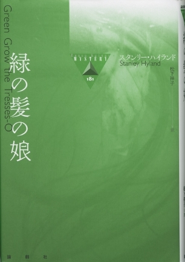
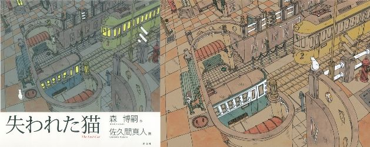
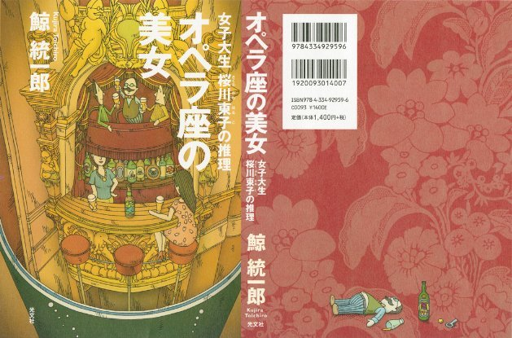

| 街の装丁 (The BBB: Breakthrough Bandwagon Books) | |
| 佐久間 真人 | |
| The BBB: Breakthrough Bandwagon Books (2017) | |
Designs of the Town (Jp)
（邦題『街の装丁』）
Originally told in Japanese by SAKUMA, Makoto
Interviewed by Ryosuke Akizuki and Ryusui Seiryoin
Cover Design by SAKUMA, Makoto
All the Illustrations by SAKUAMA, Makoto
Copyright © 2017 Makoto Sakuma / The BBB: Breakthrough Bandwagon Books
All rights reserved.
ISBN: 978-1-387-13457-1
1. 画家・佐久間真人と The BBB の出会い
The BBB 編集長（以下、 B ） : 本日は、「 The BBB インタビュー・セレクション」シリーズの最新作として、「 The Gifted （ザ・ギフティッド）」シリーズの表紙絵でおなじみの画家・佐久間真人（さくま・まこと）さんをお迎えして、創作の秘密に迫りたいと思います。
佐久間真人（以下、佐久間） : よろしくお願いします。
B: また、今回は特別に、佐久間さんと御縁の深い「 The Gifted 」シリーズの著者・秋月涼介（あきづき・りょうすけ）さんにも、ゲスト・インタビュアーとして、ご参加いただけることになりました。今日のインタビューの成功は秋月さんにかかっている、と言っても過言ではないでしょう（笑）。
秋月涼介（以下、秋月） : プレッシャーを感じます（笑）。よろしくお願いします。
B: そもそもの発端としては、佐久間さんと秋月さんが、 The BBB とは別の企画で一緒にお仕事されたことでしたよね。
佐久間 : そうですね。その御縁で、秋月さんから The BBB をご紹介いただきました。
B: おふたりのファースト・コンタクトは、何年くらい前になるのですか？
佐久間 : 2010 年の『蝦蟇倉市（がまくらし）事件』（東京創元社刊）というアンソロジー （ http://www.tsogen.co.jp/gamakura/ ） ですね。
秋月 : 当時、私はドイツで生活していた時期で、現地で著者校をしていました。原稿をミュンヘンの郵便局に持って行って、日本の出版社へ発送したことをおぼえています。ちゃんと届くんだな、と感心しました。
B: ドイツで著者校とは、世界を飛び回って活動されている国際的な作家さんのようですね。それが最初の接点で、その後、佐久間さんが毎年、東京・銀座で開催されている個展に秋月さんが行かれるようになったんでしょうか。
佐久間 : はい。それから毎年、来てくださるようになって。
B: ぼくが初めてお邪魔した時に、たしか、秋月さんは３回目でしたよね。
秋月 : 『蝦蟇倉市事件』の時に、絵地図で使用する絵を佐久間さんから送っていただいたのですが、それが面白くて。
佐久間 : 確認用の絵をバラバラにお送りしましたね。
B: 『蝦蟇倉市事件』は、複数の作家さんがひとつの世界をつくるアンソロジーで。とても同時には成立しないようなその世界観を、佐久間さんが見事に１枚の絵として描いてしまったんですよね。ぼくも、佐久間さんの存在は、もちろん、ずっと以前から存じ上げていました。ただ、佐久間さんの " トリック絵師 " とでも称されるべき独自の個性を意識するようになったのは、秋月さんと一緒に毎年の個展にお伺いするようになってからです。個展でたくさんの作品を拝見して、いつも本当に仕掛け満載の絵を描かれる方だな、という印象が強まったんです。秋 月さんは、やはり、『蝦蟇倉』がきっかけですか。
秋月 : はい。で、（ミステリ新人賞として有名な）鮎川哲也賞のパーティの後、『蝦蟇倉』の著者たちが集まる飲み会に誘われて、その席で初めて佐久間さんにお会いしました。
佐久間 : そうでしたね。その飲み会が 2010 年 10 月のことで、その時に個展のご案内を秋月さんにお渡しして。 2011 年２月からは、毎年 2 月に開催している東京・銀座での個展に毎回いらしていただけるようになりました。
B: 初めてお会いになった時、佐久間さんは、秋月さんに、どのような印象を持たれましたか？
佐久間 : 作家さんにしては、物静かな方だな ...... 、と。（笑）
秋月 : 佐久間さんは、会った瞬間から、「あ、感じのいい人だ」という印象でしたね。
B: ぼくが初めて佐久間さんにお会いした時は、やはり、銀座ブランドの印象が強く、銀座で個展をされている、というだけでセレブに見えました（笑）。
佐久間 : 本当に偶然、銀座のギャラリーと御縁ができまして。で、個展もさせていただくようになって。
B: そうして、秋月さんに佐久間さんをご紹介いただいて。 The BBB がスタートした直後から、佐久間さんにも「 The Gifted 」シリーズの表紙絵でご参加いただいています。「 The Gifted 」は、「 Vol.1 - つきまとう女」から、まさにトリック絵ですよね。
秋月 : 最初は、（カナダ人マンガ家の）カイ・チェンバレンさんが「 The Gifted 」シリーズの表紙絵を描いてくださる予定、と伺っていたんです。でも、カイさんが忙しくなられて描けない、となって、編集長から「良い絵描きさんを知りませんか？」と、ある意味で無茶ぶりされて（笑）。
B: ああ、そうでしたね。 The BBB をスタートした当初は、すべてのコンテンツの表紙をカイに任せようかな、と思っていたんです。今、佐久間さんが論創社さんで（海外ミステリ翻訳シリーズ全作品の表紙を）描かれているように （ http://ronso.co.jp/cate/overseas_mystery/ ） 、彼にすべて任せてもいいかな、と。でも、彼が別の仕事で忙しくなり、スケジュール的に描けなくなって。それで、秋月さんにご希望を伺ってみたら、佐久間さんを推薦していただいて。
秋月 : 「佐久間さんしかいない！」と思って、メールしてみたのですが、ぜんぜん返信がなくて（笑）。
B: ぼくと秋月さんのあいだでは、「佐久間さん、キレてる説」もありましたよね（笑）。あまりにも唐突なメールだったと思いますので。
佐久間 : え、そうだったんですか？（笑）
秋月 : あとで聞いたら、最初は偽物の秋月涼介からメールがあった、 と思われたみたいで。佐久間さんは、私のメールアドレスを 出版社 に確認されたそうで。最終的には、直接お電話しちゃいました。
B: 秋月さん、あの時、コインを投げてませんでしたっけ？コインを投げて、表が出たら電話しよう、と。
秋月 : それは、実際、やりましたね。
佐久間 : 中学生が女の子をデートに誘う時みたいですね（笑）。
秋月 : ちょっとドキドキしてました。表が出たので、これは運命かな、と。
佐久間 : 迷惑メールなども届くじゃないですか、そんなこともあって念のため確認が取れてからご返信しないとまずいかなと思いまして。本文が「秋月です。ご無沙汰しています。こちら、佐久間真人さんのメールアドレスでよろしいでしょうか？」だけのメールってかなり怪しいですからね ...... （笑）。
B: なるほど。それだけだと、不審なメールですね（笑）。話を戻して、佐久間さん、秋月さんから「『 The Gifted 』の表紙を描いてもらえませんか？」とご連絡があった時のことは、おぼえてらっしゃいますか？
佐久間 : ええ、もちろん、おぼえてますよ。それ以前に電子書籍を経験したことがなかったので、どんな感じになるのかな、という興味もあって。
B: たしかに、佐久間さんは、画面での絵の見え方を、最初から、かなり気にされていた印象があります。
佐久間 : そうですね。サムネイルの、本当に小さな画像になった時にも、何か伝えないといけませんので。
B: デジタルの場合、ディスプレイの性能によって、見え方が変わったりするんですよね？
佐久間 : 色が変わったりします。そのあたりも、ある程度は、変わってしまっても仕方ないかな、と。
秋月 : 紙に印刷しても変わりますし、ディスプレイだと発色で変わりますよね。
2. 海外向けにペーパーバックを意識して
B: そうして実際に、この Vol.1 の表紙を描いていただいたわけです。佐久間さん的には、 Vol.1 の表紙については、どのような意図があったのでしょうか？この表紙は、隠し絵になっていますよね。
佐久間 : 心霊写真のような（笑）。
B: その仕掛けが、やはり、いちばん印象的でした。
佐久間 : あと、海外の方が御覧になるのが前提、ということでしたので、なんとなく、どこか日本の雰囲気を。浮世絵であったりとか、そういう日本らしさが、どこかで伝わればいいな、という意図はありました。あとは、なつかしい映画のポスターのような。
秋月 : それは、感じられましたね。今までの佐久間さんの作風とは、ぜんぜん違った感じがして。すごくいいなぁ ...... と、気に入りました。
B: あと、この表紙で、秋月さんの漢字のお名前が、鳥が飛んでいるように配置されていますよね。
佐久間 : そうですね。月のところに。
B: 文字とわからないくらい巧妙に隠しているのが、印象的で。英語版の表紙では Vol.2 以降も毎回、秋月さんの漢字のお名前は絵の一部のように扱われることが " 縛り " になっていますよね。
佐久間 : そうですね。秋月さんのお名前が綺麗な漢字なので、漢字も絵の中に描いて、その雰囲気が伝わることを期待していました。
B: タイトルの表記についても、英語版と日本語版では、それぞれフォントが違いますよね。このあたりは、かなりこだわりをお持ちなんですか？
佐久間 : 英語版のほうは、わりと自然に見えるような。
B: ペーパーバックのようなイメージで？
佐久間 : ええ。で、日本語版のほうは、日本の古い怪奇小説とか怪奇漫画のようなイメージで、そこに英語タイトルをつけているかのような雰囲気で。あえて、ちょっと文字だけ浮いて見えるようにしています。
秋月 : 自分は、この月のクレーターの感じがリアルだなと思って、佐久間さんに聞いてみたら、ちゃんと月を写真で撮っていたみたいで。
佐久間 : はい。月の部分は、その写真を合成しています。
秋月 : そこまでするんだ、すごいな、と感動したのをおぼえています。
B: そうした佐久間さんの創作の裏話を、毎年、個展にお邪魔した際に伺っていますが、本当に面白くて。今日は、ひとつでも多くのそうしたエピソードを、このインタビューを読まれる読者の皆さんにも知っていただきたいです。
佐久間 : Vol.1 の表紙については、時計の時間も、中の物語と関係していて。
B: あれ、そうでしたっけ。それは、気づいていなかった。本当に佐久間さんの絵は、１枚１枚、凝ってらっしゃいますよね。
秋月 : 電子書籍だから、この絵の人がスマホを持っている、とか。
B: え？これ、そういう意味だったんですか。
佐久間 : そうですね。初めての電子書籍だったので、スマホかタブレットのような物を人物に持たせて。
B: それも、今、初めてお聞きしましたよ。これ、スマホだとは思っていなかったですね。
佐久間 : 作品の舞台が、ドイツの ------
秋月 : ミュンヘンをモデルにしています。
佐久間 : ------ ということで、公衆電話の形もミュンヘンの物に近くしてあります。
秋月 : こだわりがすごい。
佐久間 : この時計塔は、「 The Gifted 」の Vol.1 から Vol.5 までをまとめた合本のカバーでも使いました。
秋月 : ちなみに、自分は、 Vol.4 で、その時計塔を描写してみました。
佐久間 : ああ、そうですよね。
秋月 : 時計塔のある歴史地区を、ちゃんと描写しているところが、それまでなかったんです。
B: 佐久間さん、 Vol.1 の表紙で、女性の顔を隠し絵として潜ませよう、というのは、どの段階で思いつかれたんですか？
佐久間 : わりと早い段階で、秋月さんから、古い街並を描いて欲しいというご希望をいただいていまして。それをどういう風に見せるか考えながら、物語を読んでみたら、ビデオでしか見えない女の人が出てきて。その " 見えそうで見えない感じ " がいいな、と思って。これも、たぶん、サムネイルで小さくなると見えやすくて。大きな絵で見ていると見えにくいんです。
B: こういうタイプの隠し絵は、他の作品で描かれたことはあるんですか？
佐久間 : なかったと思います。
B: ですよね。われわれも、佐久間さんの作品は、たくさん拝見していますが、こういう絵の隠し方というのは記憶にないです。
佐久間 : 他には、ないはずです。
B: Vol.1 の時、秋月さんから佐久間さんにリクエストがあったとのことですが、具体的には、どのような内容だったんですか。
秋月 : よくおぼえていないんですが（笑）。
佐久間 : 時計塔があって、旧市街と新市街があって、とか。
秋月 : 場所の話は、したような気がします。基本は、ぜんぶお任せ、という感じだったと思うのですが。どんな絵ができてくるのか、まったく予想していませんでした。最初に見た時は、意外な感じでした。味がある、というか、あまり見たことのないテイストで。
B: 佐久間さんは、「 The Gifted 」シリーズの表紙については、登場人物をあえて描いていないじゃないですか。メインキャラクターたちを。
佐久間 : ああ、そうですね。
B: それは、どのような意図がおありなんですか？読者の想像に任せたい、ということでしょうか。
佐久間 : まさに、その通りです。美形のキャラクターが出てきますが、人それぞれ、想像している姿が違うだろうな、と。たまに、あまり深く考えずに描いてしまうと、「こんなの違う」と言われてしまったり（笑）。たとえば、「美人」という描写があった時に絵を描くと、「あー、あの人の考える美人は、こんな感じなんだ」と思われるのも恥ずかしくて。
B: たしかに、美の基準は、人によって違いますよね。
佐久間 : それが大きな理由です。たぶん、読者の皆さんは、いちばんの理想像を思い描いてらっしゃると思うので。
B: 読者によって、ミロの顔もサヤの顔も違う、ということですね。
佐久間 : 海外の方も読まれていますので、想像される顔の人種が違う、くらいのこともあると思うんです。
秋月 : 自分も、顔の描写は、あまり細かく書いていないですからね。
B: 「 The Gifted 」シリーズは、 Vol.1 を無料にさせていただいていて、これが The BBB の他の無料作品と比べても、とても順調にダウンロードされ続けています。特に英語版は。これは、たぶん、佐久間さんがペーパーバックを意識してくださったからで。日本国内より海外の方が、かなり多くダウンロードされているんです。これは、 The BBB では非常に珍しいケースです。秋月さんは、日本でミステリ作家さんとして活動されていますが、海外からたくさんダウンロードされているというのは、本当に快挙だと思います。このペー パーバックっぽい表紙は絶対に関係あるはずで。 The BBB では、ペーパーバックっぽい表紙というのが、他にあまりないですしね。他は、日本人向けのテイストが多いと思っていて。
佐久間 : ああ、たしかに、それは以前から感じます。
B: 佐久間さんのペーパーバックっぽさへのこだわりが海外にも通用した、ということだと思っています。
佐久間 : 最初にお話をいただいた時、海外に向けて、というお話で。かなり、それもプレッシャーになっていて（笑）。どう見せたら自然に手にとってくださるのかな、というので頭を悩ませて。
B: 佐久間さんとしては、海外を意識されたお仕事というのは、初めてだったんですか？
佐久間 : まったく初めての経験です。
B: やはり、絵の力ってすごい、と、いつも思っていまして。佐久間さんの個展にお邪魔すると毎回、「これは絶対、世界に通用する絵だ！」と、強く思っているんです。
佐久間 : そ、それは、恐縮です。
B: でも、知られるきっかけがないと、なかなか海外まで伝わりませんよね。こちらから何かしないと、海外の方には佐久間さんの幅広いお仕事を知るきっかけがないわけですから。そういう意味で、佐久間さんには The BBB を有効に使っていただきたいと思ってきましたし、このインタビューは、まさにベストの機会なわけです。
佐久間 : ですよね。それは、ぜひ、と思っています。
B: でも、佐久間さんは、飛行機が怖くて海外に行けないんでしたっけ？
佐久間 : 怖いですね ...... 。飛行機だけは勘弁して欲しくて。
秋月 : 縛って連れて行かないといけないですね（笑）。
佐久間 : 気絶させられたりして？（笑）荷物として運んでいただければ、と思います。
B: 秋月さん、そういえば、次回の「 The Gifted Vol.7 」は飛行機ものですよね？
佐久間 : なんて恐ろしい話なんですか、それは（笑）。
B: 佐久間さんの絵筆が鈍るかもしれないですね。飛行機への怖さゆえに、 Vol.7 だけ急に絵のクオリティが落ちるとか ...... 。
佐久間 : 飛行機そのものは、好きなんですよ。見るのも描くのも。乗るのが怖いんです。たぶん、偶然、飛んでるんですよ。あんなものは ...... 。
3. カラフルな絵に隠されているのは
B: Vol.1 は、だいぶ語っていただけましたので、「 Vol.2 - 帰ってくる死んだ仔猫」の話に移りましょう。 Vol.2 の表紙も、これは実は、かなり小ネタ満載、というか。作中の小道具が、絵の中に ------
佐久間 : ほぼすべて、描きましたね。
B: よくおぼえているのは、秋月さんと個展に伺った際、この絵を改めてじっくり見て、気づいたんです。棚の中に、人間らしきものが ...... 。
佐久間 : そうですね。いちばん上が肉で。
B: 作中では、肉と人間が入れ替わりますよね。
秋月 : そうですね。
佐久間 : なので、上が肉で下が人。そして、真ん中がケーキで。
B: 佐久間さんは、長年ずっと猫の絵を描かれていますよね。そのテーマで毎年、個展もやられていて。秋月さんは、そんな佐久間さんを意識して、あえて Vol.2 では猫を扱われたんですか？
秋月 : 実は、似たような都市伝説 （秋月註 : 『包みの中に死んだ猫』「この伝説で
は、家族の一員であった猫の死体が、どこかへ持っていって処理されるためにきっちりと梱包されるのだが、それが途中でなくなったり、盗まれたりしてしまうのだ。（ジャン・ハロルド・ブルンヴァン著『消えるヒッチハイカー』（新宿書房）より）」） があるんですが、その逆バージョンを書こうと思ったのが、この Vol.2 なんです。
佐久間 : スティーヴン・キングの「ペット・セメタリー」みたいな感じですか？埋めると、よみがえる、とか ...... 。
秋月 : いえ、処理したはずの猫の死体が、自分のところに戻って来るんです。 Vol.1 は完全にオリジナルの都市伝説だったので、 Vol.2 は既存の都市伝説をベースにしてみたんですよ。
B: 猫というキーワードから、佐久間さんのことは浮かんでいました？
秋月 : それはありますけれど、箱を開けたら、猫の死体がある、というイメージがあって。こんな絵になるとは、まったく思っていなくて。予想外の方向でしたし、ちゃんとガジェットをぜんぶ入れてくれるあたり、いかにも佐久間さんらしいなと。
B: たしかに、 Vol.2 のガジェットがうまく盛り込まれていますよね。佐久間さんは、どういった着想から、このようなテイストの絵にしようと思われたんですか。
佐久間 : 最初の着想としては、閉じた空間の中が入れ替わるお話なので、たくさんの閉じた空間のある物を描こうと思って。それで棚にして、背景にも引き出しをいっぱい描いて。それらが入れ替わっていくような、いろんなところにつながっているようなイメージで。
B: 佐久間さんとは、毎年、個展の後に「 The Gifted 」のお話をさせていただいているんですが、この Vol.2 の頃から、「デザイン的には、タイトルをシンプルにしたほうが良いかもしれません」というお話をされていて。ペーパーバックっぽくする時に、タイトルが長いと入れにくい、というお話もありましたよね。
佐久間 : そうですね。意識して海外の装丁を見てみると、単語ひとつとか、そのくらいシンプルなものが多いので。
秋月 : 「 The Gifted 」というメインタイトルはシンプルなんですけどね。サブタイトルがあるので。
B: 海外作品だと、サブタイトルというのは、あまり入れないかもしれませんね。
佐久間 : そんな印象はありますね。
秋月 : サブタイトルが入っているから、映画のポスターっぽくなってる気もします。
佐久間 : ああ、たしかに。
B: 秋月さんは、 Vol.2 の表紙を最初に御覧になった時、全体として、どういう印象でした？ Vol.1 を踏まえてのご感想として。
秋月 : まず、カラフルになったな、と思いました。色遣いが綺麗だなと。すごく良い感じの色合いで。
佐久間 : Vol.1 をかなり暗い絵で描いてしまいましたので、今度は色で目立つ方向も考えてみようかなと。違うアプローチを毎回してみたいので。
B: Vol.2 では、英語版と日本語版で、背景の棚の色も違いますよね。だから、パッと見の印象も、だいぶ違って。
佐久間 : Vol.1 も、一応、空が違うんですよ。英語版は海外向けなので、ちょっと浮世絵っぽい空で。グラデーションがあって。
B: ああ、なるほど。そこまで意識されていたんですね。それは教えていただかないと、わからなかったですね。この話は、かなり貴重ですよ。
秋月 : どういう感じで描かれたのかを聞くのが、毎回、楽しくて。こっそりメールで聞いているんですよ（笑）。
B: それは、みんなでシェアしましょうよ！メールで聞かずに（笑）。 Vol.1 と Vol.2 で、まだ語られていないことはありますか？
秋月 : 絵の内容がきっかけで絵を買ってもらえた、というお話はされていましたよね。
佐久間 : あ、はい。そうですね。「ねこの引出し」という店名で猫グッズを扱ってらっしゃるお店があって。そのオーナーさんが、「この絵は、まさに『猫の引き出し』だから、ぜひ欲し い！」と、個展の時に、おっしゃってくださったんです。でも、私の説明で、「え、これ、死体なんですか !? 」と（笑）。
B: ふつう、死体は NG ですよね（笑）。
佐久間 : さんざん迷われたんですが、猫と引き出しの絵なんて滅多にないから、と、最終的にはご購入していただけました。
B: この絵は、ぼくも、秋月さんが個展の現場で気づかれるまで、死体が入っているとは気づかなかったですからね。背景として見ちゃっていて。何かの詰め物かと。
秋月 : でも、よく見ると手足があって（笑）。
佐久間 : あまり目立ってもあれだなと思って、暗い色で描いていますので。
B: そういう意味で、これも隠し絵で、ドキッとしますよね。
秋月 : わかるとゾクッとします。
佐久間 : 本編を読んでから絵を見ていただくと、驚かれるかもしれませんね。あと、 Vol.2 では、日本語の表記が大きくなっています。
B: たしかに、 Vol.1 の日本語表記は、だいぶ小さかったですね。
佐久間 : 最初は、あくまで英語版優先というお話だったので、日本語タイトルは、あまり目立たせないほうが良いかも、という考えもありまして。でも、日本語版で読まれる方には、日本語タイトルが大きいほうが良いのかなと思い、 Vol.2 では少し大きくしました。実は、日本語タイトルは、それ以降も、だんだん大きくなっているんですが ...... 。
B: なるほど。ちなみに、表紙の著書名「秋月涼介」の文字も、少しずつ大きくなっているようですね。
秋月 : この日本語フォントは、どうされているんですか？
佐久間 : これは、『暗黒工房』という素材やゲームを作られているサイトのフリーフォントです。
秋月 : じゃあ、いろんな文字が、ぜんぶ揃ってるんですか？
佐久間 : 日常使う文字はほぼ揃っているはずです。同じフォントが、 The BBB の他の作品でも使われていますよね。
B: 神狩り博士の「 Towerld （タワールド）」シリーズです。同じフォントなのかな、と以前から思っていました。やはり、そうですよね。
秋月 : 気づいていなかった ...... 。
佐久間 : 「 Towerld 」シリーズは、いいですよね。表紙が毎回、ものすごく味があって好きです。
B: 佐久間さんは、「 Towerld 」の表紙は、いつもホメてくださっていますね。
佐久間 : 本当にいいですよ、あの表紙の絵は。なんとも言えない味があって。
秋月 : たしかに、独特の雰囲気がありますよね。
4. モナリザのプレッシャー
B: で、実は、「 The Gifted 」の Vol.1 と Vol.2 は、英訳者が三萩野英次（みはぎの・えいじ）さんという方だったのですが、いろいろあって、「 Vol.3 - スカイダイビングクラブ」からは、ぼくが英訳させていただくことになりました。
佐久間 : そう、 Vol.3 から英訳者が変わりましたよね。
B: はい。 Vol.3 からは、ぼく自身が英訳しているので、編集者として接した Vol.1 と Vol.2 よりも、それ以降の作品のほうに強い思い入れがあります。で、よくおぼえているのですが、佐久間さんに「 Vol.3 の表紙は、佐久間さんにとってのモナリザでお願いします」と、無茶ぶりをさせていただきました。「佐久間さんなら、モナリザを描けます」と説き伏せて。
佐久間 : 本当にモナリザみたいな絵を描こうかと迷いました（笑）。
秋月 : 当時の佐久間さんのメールで、「（緊張で）ぷるぷるしてます（＝震えています）」と、よく書かれていましたよね。
B: 当時、われわれのあいだでは、「ぷるぷる」が流行語になりましたよね。秋月さんにも、お原稿の催促をしたら、「ぷるぷるしてます」と、ご返信が来たり。
秋月 : ぷるぷるしている絵文字を送ったりしていましたね。こんな感じの ↓
__φ(( ゜ Д ゜ ;)))))
佐久間 : なにを描けば良いのかと、迷っていましたね。
B: 裏話としては、最初、英語版の表紙で「 SKYDIVING 」の「 IVI 」の部分が完全につながって「 M 」に、つまり、「 SKYDMNG 」に見えていたので直していただきました。佐久間さんからは、いつも完璧な表紙をいただくのですが、あの時は修正をお願いした唯一のケースです。
佐久間 : そう見えちゃうのは、もったいないですから。
B: Vol.3 の表紙があのような絵柄になったのは、どのような意図があったのでしょうか。
佐久間 : 夢の中の話が重要な意味を持つので、それが伝わればいいなと。楽しい夢を見ているような感じだけど、ちょっと大変なことになるよ 、というようなイメージで。意識したのは、電子書籍なので帯がない 事です。なので、重要な要素をいちばん下に持っていけるなと思って、試しに描いてみたんです。
B: 帯があれば、この女性の顔が ------
佐久間 : 隠れてしまいますね。でもその場合は、血が出ている耳だけが見えるので、みなさん、なんだろうと思って帯をめくっていただけるのかもしれません。
B: 秋月さんは、 Vol.3 に関しては、どのような印象を？
秋月 : 最初に見た時、「ん？これは、なんなんだろう？」と思ったんですが。「脳裡に絵が描いてあるから、夢なんだ！」と、わかって。ちょっとびっくりして。こんな表現方法があるのか、ここから先の部分は夢なのね、と感動しました。
佐久間 : 頭の中の描写ですね。
B: 先ほど、メインキャラクターは描かないというお話がありましたので、これはサヤではないわけですね？
秋月 : サヤなのかな、という感覚はありました。
佐久間 : なんとなく、漠然と。でも ...... そうですね。作中では、遡ると、けっこう事件の犠牲者が多いですよね。なので、どこかでこういう人がいたかもしれません。
B: 時計塔は、 Vol.1 と同じなんですか？
佐久間 : ほぼ同じですね。
B: シティに時計塔はひとつだけなんですかね？
秋月 : さあ ...... たぶん、そうなんじゃないかと。
B: 「さあ」って、けっこう適当なんですね（笑）。著者が知らなかった、という。
佐久間 : それが怖いんですよ。絵を描く上では。途中で設定が変わったりして。
秋月 : 虹色の気球と、髪の虹が、とても綺麗ですよね。
B: あ、話題をそらした？（笑）
佐久間 : 日本語版は黒髪になっていて。
秋月 : それは、日本人を意識して、ですか？
佐久間 : そうですね。あと、日本語版は赤い文字が上に載るので。
B: 日本語版だけ黒髪で、海外版はレインボウなんですね。
佐久間 : 海外版のほうが派手で、目立つように、とは、いつも意識しています。あとは、耳から血が出ていたら、気になって読んでもらえるか もしれない という 思い もありました。
B: 作中では、耳から血は出ていないですよね。
佐久間 : でも、高い所から落ちると、いろいろ血が出そうだな、と。
B: そうした表現方法は、面白いですね。ところで、時計塔の左右にある、後ろのこのオベリスクみたいな物は、何なんですか？
佐久間 : これは、煙突みたいな物で。一応、 Vol.1 の背景にもあるんです。
B: 佐久間さんとしては、これは煙突でいいんですか？
佐久間 : 煙突 ------ みたいなもの、ですね。
B: 煙突にしては多いな、という印象も受けますね。 Vol.1 では 3 本も立っていますし。佐久間さんの世界観では、煙突が重要なんですね。次回から小説でも煙突が重要な意味を持つのか ......
佐久間 : Vol.1 の時は縦線で女性が描いてあるじゃないですか。それと空をスパッと分けてしまわずにつないでいくような。タッチのつなぎとして、縦線で影が入っているんです。それで違和感ない物、という感じで。女性のタッチから生まれた感じです。
B: とにかく毎回、意外性がありますよね。では、 Vol.4 の話題に移りましょう。
5. 電子書籍の表紙だからこそ
秋月 : 「 Vol.4 - 双子座の怪人」の表紙は、超意外でしたね（笑）。
B: Vol.4 は、ぶっ飛んでますよね。 The BBB のスタッフ座談会である「 Cast Party 2015 」というコンテンツの中で、校正責任者のエージェント工刀（くぬぎ）さんが、この Vol.4 の表紙について、本当に驚いたと語っていました。これは誰も予想できなかった方向性で。しかも、秋月さんのお名前に何か刺さってるし（笑）。

秋月 : あの部分、どうなっているんだろう？と、最初は不思議で。紙だから、折り返しでナイフが作られているんですよね。
佐久間 : ナイフ形に切り抜いて、起こしてあるんです。
秋月 : 「おー、すげー！」、と。説明されるまで、わからなかったんです。
佐久間 : その部分について、メールいただきましたよね。どうなってるんですか、と。
B: だから秋月さん、いつも個人的に聞かずに、シェアしましょうよ。
秋月 : う、そうですね。今後は ...... 。
B: この発想は、なかなか出てこないでしょう。エージェント工刀さんも、「佐久間さんの頭の中は、どうなっているんだろう」と、不思議がっていましたからね。佐久間さんがおっしゃっていたのは、双子がテーマになっているので、双子っぽいイメージで ...... 。
佐久間 : 人間のコピーが並んでいるような感じですね。
B: 双子というテーマから、この絵は浮かばないですよね。ふつうは。
秋月 : あと、ストーリーを踏まえると、１人は偽物なんですよね。
佐久間 : なので、どこかで きそこないのコピーといった雰囲気にしています。これも、折り紙 や 切り紙のように、日本を連想してもらえるかなと。実際に切り抜いて、こうなるか、作ってみたんですよ。
秋月 : そのあたりのこだわりが、すごいですよね。
B: 英語版と日本語版で、だいぶ色合いが違うのは、何か意味があるんですか？
佐久間 : 英語版は、背景は赤っぽい色で統一していてメインの黄色い文字と手前の黄色い 3 人が目立つようにしてあります。日本語版では逆に、英語版の背景で見にくくなったピンクの 3 人が見やすくしてあります。で、黄色の上に赤い文字が載っています。文字は、やっぱり、だんだん ------
秋月 : さらに大きくなっていますよね。
B: 明らかに文字が大きくなりましたよね。今にして思うと、「 Vol.1 - つきまとう女」は、だいぶ文字が小さかった気がします。
佐久間 : いちばん困ったのは、 Vol.2 でした。タイトルが長いがゆえに、小さくなってしまって。
B: ここでちょっと脱線しますが、「 The Gifted 」の Vol.1 は、無料ということもあり、英語版も日本語版もたくさんダウンロードされていて好評なんですが、なかなか有料の Vol.2 に進んでいただけないんですよ。このような現象は、他の作家さんのシリーズでも同様なんですけど。佐久間さん的に、なかなか Vol.2 に進んでいただけない要素として考えられるものはあります？
佐久間 : 原因、ですか ...... ？
B: 秋月さんがおっしゃっていたのは、 Vol.1 のラストがダークすぎたのかな、と。もちろん、無料と有料の差は当然あるわけですが。そうだとしても、 Vol.1 は本当に好調なので、割合として、もう少し多くの方が Vol.2 に進んでも良さそうなものなのに ...... とは、いつも思っていまして。
佐久間 : 何が原因なんでしょう。今の時代、無料だけでも読み続けられちゃう作品数がありますからね。それがいちばんの原因だと思いますけど。物語のラストについてはダークすぎることはないように感じます。「 The Gifted 」の Vol.1 は、すごく理詰めで解いていくじゃないですか。なんでもありの世界観なのに、それしかない、という美しい答えが導き出されるんです。そこがすごく面白くて。そして、最後の最後は、わりと勧善懲悪な、スッキリする終わり方ですよね。水戸黄門のような。実は、時代劇っぽいのかもしれませんね。
秋月 : あまり気にしていなかったんですけど、「必殺仕事人」みたいな ...... 。
佐久間 : そうそう、それなんですよ。
秋月 : ただ、最後に人は殺さないんですけどね。
佐久間 : 殺さないけど、きっちり懲らしめて成敗しちゃう感じですよね。
秋月 : で、また Vol.4 に話を戻すと、サムネイルでも文字が完全に見えるようになりましたよね。
B: 佐久間さんは、その点にずっとこだわってらっしゃって、 Vol.4 では、かなり確信犯的でしたよね。
佐久間 : 英語のニュアンスとして、どこを強調して良いのかは、よくわかっていないんですが。そこは見た目優先で、なんとなく。タイトルは Gemini だけでもいいかな、というくらいで。
B: 日本語の「双子座の怪人」という文字も、だいぶ大きくなって。 Vol.3 の「スカイダイビングクラブ」という文字も大きかったんですが、さらに拡大しましたよね。
佐久間 : あと、 Vol.3 から日本語版はタイトルが縦書きになったんですよ。
B: ああ、たしかに。これは日本を意識されて？
佐久間 : そうですね。日本語は縦が自然かなと。あと、縦だと、上から下まで広いスペースを使えますので。紙の本のように、帯で隠れることもないですし。
秋月 : 電子書籍だからこそ、の表紙なんですね。
6. 見比べて初めて見える全体像
B: 続いて、「 Vol.5 - 北病棟の死神」です。 Vol.5 は、シルエットの人物の立ち位置が微妙に違うんですよね。手前の市松模様のタイルも、少し違いますね。そして、病院の壁に「秋月涼介」と書いてあるんですが（笑）。
秋月 : 病院長の名前が壁に彫ってある、みたいな？（笑）
佐久間 : そうですね。タイトルを縦に入れようとしたら、子供はズラしたほうが良いかなと。それに合わせてタイルを調整して。影の具合などで。
B: 子供の場所が微妙にズレているのは、読者の方は、なかなか気づかないと思います。つまり、海外の方は英語版しか見ないでしょうし、日本人読者も日本語版しか見ない方が多いでしょうから。
佐久間 : ああ、たしかに、そうですよね。
B: この佐久間さんインタビューは、読者の皆さんが英語版と日本語版の表紙をじっくり比較できる初めての機会になると思います。
佐久間 : The BBB サイトや電子書店でも、英語版と日本語版を両方同時に並べて表示されているわけではないですものね。
B: 「 Vol.4 - 双子座の怪人」と「 Vol.5 - 北病棟の死神」の文字フォントのサイズは、ほぼ同じに見えるんですが、同じなんでしょうか。
佐久間 : そうですね。ほぼ同じくらいです。
B: 秋月さんのお名前は、もう限界まで大きくなっていますよね。ついにここまで来たかと。そのうち、画面いっぱいになったりして。
佐久間 : 選挙ポスターみたいな？（笑）
秋月 : 巻を追うごとに字を大きくする、という縛りですか？（笑） Vol.5 については、自分は左側にある屋根が何だかわからなかったです。これは何だろうと思って。
B: これは、手前にある別館か何かの庇（ひさし）でいいんですよね？
佐久間 : そうです。それが曲線になって見えていて、人物がいるのがその庇の下の同じく曲線の通路のようなところです。奥の建物は、病院らしくするためにヘリポートを描いてみたりしています。どうしたら病院っぽく見えるかなと。
B: たしかに、建物だけで病院を表現するのは、難しいかもしれないですね。あと、日本語版では、ヘリポートは隠れちゃってますね。
秋月 : 風向計みたいな物も見えますね。英語版だと見えていないんですけど。
B: 両方を見比べて初めて絵の全体像がわかる、というのは、本当に巧妙で、トリッキーですね。
佐久間 : あと、 Vol.4 の切り紙は小説の内容から飛躍しすぎた感もあったので、 Vol.1 のタッチに若干戻すような気持ちはありました。
秋月 : 点滴している少年の哀愁がすごいですよね（笑）。ジョルジョ・デ・キリコの「通りの神秘と憂愁」という絵があるんですけど、あの絵の女の子のように、寂しい感じが伝わって来て、いいなぁ ...... と。
B: Vol.5 では、文字を入れるために絵が動かされた、というのも面白いですよね。表紙絵とデザイナーが別人の場合には、ありえないことですからね。
秋月 : 子供の大きさも、微妙に違うんですか？
佐久間 : あ、それは遠近法で、手前にいるほうが少し大きくなっています。
秋月 : それは、絵のサイズを変えているんですか？
佐久間 : サイズを変えて、足りないところを描き足しています。
秋月 : おおっ、すごい。
B: 以前、伺いましたけれど、 Vol.5 の表紙の少年はコピペじゃなくて、描き直されたんですよね。
佐久間 : 部分的にコピペなんですが、切り離して描き直しています。
B: 少年だけレイヤーを分けて描かれているんですか？
佐久間 : 最初は同じレイアウトでいけるかなと思っていたんです。日本語版のほうは、レイヤーを分けて、足りないところを描き直す感じで。
秋月 : 病院は、何かモデルがあるんですか？
佐久間 : 近所の大きい病院を参考に ...... （笑）。まあ、そのままではないですけれども。病院らしい建物のつくりは、参考にしましたね。ヘリポートもそうですけど、大きい病院っぽい特徴ですね。
秋月 : 雲には、何か思い入れとかあるんですか？
B: 線として区切っている感じはしますよね。４本の線があって。
佐久間 : これは、雲を暗く空をものすごく明るいものにして、小さくなった時に白黒白黒のストライプのように目を惹けるように、とは意識しました。チカチカして目に入るような効果は、ねらっています。編集長にお送りしているのは印刷用のデータじゃなくて、モニターで見る用のデータなので、かなり彩度の高い、印刷では出ない色を使っていますね。
B: 印刷では出ない色、というのがあるんですか？
佐久間 : あります。
秋月 : 色域が違っていると、出ないですよね。
佐久間 : モニターがレッド・グリーン・ブルー（ RGB ）の 3 色で、印刷はシアン・マゼンダ・イエロー・ブラック（ CMYK ）の 4 色で再現されています。そして RGB の方が、かなり派手な色が出せるんです。「 RGB CMYK 」などで検索すると再現できる色を比較した表を見ることができます。
[ 参考 ] 以下 の「 Y 駅発深夜バス」 （青木知己著 ／東京創元社刊 ） の装画では、 CMYK で再現できる鮮やかな色を意識しています。 （佐久間）
7. いつも新しい趣向を試せる場として
B: そして、 Vol.1 から Vol.5 までを 1 冊にまとめた合本ですね。 2016 年は「 The Gifted 」の合本も刊行させていただいて、この表紙もアイディアが秀逸で、日本語版が右開きで、英語版が左開きで。布装丁風になっています。以前も伺ったのですが、実際の本に何かを巻かれたのでしたっけ？
佐久間 : これは下地になる布のテクスチャーを写真を撮って作って、それに影や模様を描き足しています。布を本の形に立体的に見せるために影がつけてある感じですね。
B: そして、煙突への謎のこだわりがすごいですよね。煙突に何があったんですか？（笑）トラウマでもあるんですか？
佐久間 : 最初に描いちゃった以上、ないとおかしいだろうな と 。
B: 原作では煙突は出てきていないんですが ...... 。
佐久間 : これは、原作に出していただくしか ...... （笑）。
秋月 : 考えておきます（笑）。
B: そして、現時点での最新作「 Vol.6 - 神隠しホテル」です。
秋月 : 今回は初めて、英語版と日本語版が完全に別の絵になりましたね。
佐久間 : 最初に描こうと思ったのは、斜めの線（壁）で廊下と部屋に 2 等分された構図で、廊下から部屋に入ろうとしている人物を真上から見た姿なんです。英語版と日本語版の区別としては、部屋の中が真っ黒のバージョンと、廊下が真っ黒なバージョンに分けようかと。でも、そうすると人物の見え方が中途半端になってしまうので、廊下から部屋に入る人物を斜め上から見た図と、部屋に入ってくる人物を斜め上から見た図、という形で区別して少し角度を変えた絵を２枚描くことにしました。それぞれ真っ黒になる部分があるのは、そこに入る文字がハッキリ と見えやすくなるかと思ったんです。
B: 絵と同様に、文字の見え方へのこだわりも強いですね。
佐久間 : あと、事件の内容が、普通の人から見ると、完全に見えない空間に入ってしまう話なので。普通の人から見た現場の状況を描こうかなと思って、中か外の片方が 見えない 絵 にしました。で、つなぎ合わせると、両方の世界が完全に存在している、というような。
秋月
:
Vol.6
は、
Vol.4
と
Vol.5
の中間のイメージですよね？マネキン？っぽい人の感じが、また、ちょっとキリコっぽいですね。不穏な感じが出ています。
佐久間
:
そうです、ちょうど象徴的な絵柄の
Vol.4
と作中風景の
Vol.5
の中間のイメージとなっています。能力の図解的な絵なのかもしれません。
秋月
:
英語版と日本語版を左右に並べると、部屋の角度が対になっているので、面白い構図になっていますね。そして、踏み出した足が、ちゃんとタイルの同じ場所を踏んでいる......流石だ......。
佐久間
:
人のポーズ、足元のタイルなど「同じ場所」にするのには苦労しました（笑）
秋月
:
ですよね。腕の位置とか、後ろから見ると、こうなってるのか、とか思ってました。
佐久間
:
構図や視点など
2
枚が対になっている面白さを探りつつ、画面の黒の部分を、文字を見やすくする背景としても活用してみました。
秋月
:
流石は、脳内に三次元の風景が描ける男ですね！何気にドアの蝶番まで描かれてあるのが、細かいです（笑）今回、英語版は、小さい絵で見ると、
HOTEL
だけが際立って見えます
ね。それも、ちょっと面白いです。
B:
秋月さんのお名前も、ついにここまで大きくなって
......
感慨深いです。
秋月 : って、編集長！そんなところに感慨を抱いているんですか！（笑）
B: Vol.6 の表紙も、とても面白い、新たな試みですね。こうしていつも「 The Gifted 」の表紙を描いていただいてるわけですが、佐久間さんとしては、新たな実験を試せる場、といった、他の仕事と明らかに違う意識はお持ちですか。
佐久間 : そうですね。それは、あるような気がします。
秋月 : 他のお仕事とは、明らかに、ちょっと雰囲気が違いますよね。
佐久間 : まず、海外向けというのを自分なりに解釈して考えてみよう、と。あと は、電子書店では縮小されたサムネイルだけが頼りなので、小さな 画像 で見た時の見え方をすごく意識して、やってますね。
秋月 : 目を惹きやすいように、というのは、よくわかったのですが、他のお仕事と雰囲気が違うのは、どうしてなんでしょう？
B: The BBB の佐久間さんの著者ページを見ていただければ、過去に佐久間さんが手がけられた作品をご覧いただけます。それらと比較すると、「 The Gifted 」シリーズの表紙がかなり異色なテイストだと、わかりますよね。
佐久間 : 完全に日本っぽい絵のほうが海外の方に手に取ってもらえるのか、あるいは、ある程度は英語圏で馴染みのある雰囲気のほうが興味を示しやすいのか。そこは迷うところですし、その模索が雰囲気にも出ているかもしれません。
B: The BBB では、積木鏡介（つみき・きょうすけ）さんの「都市伝説刑事」というシリーズも刊行させていただいています。「 The Gifted 」と「都市伝説刑事」は、 The BBB 発のオリジナル・ミステリ作品の２本柱と言えると思います。これが見事に、日本語版と英語版でダウンロード数が逆転していて。「都市伝説刑事」は、日本語版では、「 The Gifted 」よりダウンロード数が多いんです。ところが英語版では、「 The Gifted 」のほうが「都市伝説刑事」より多いんです。これは作品の優劣ではなく、表紙が英語 圏向けか、日本人向けか、というだけの違いじゃないか、という気は以前からしています。
佐久間 : だとすれば、より英語圏でインパクトのある描き方を絵でできれば ------ 有料の Vol.2 以降にも、もっと多くの方が入ってきてくださるかもしれない？
B: そう、だから、 ぼく がモナリザをリクエストしたのも、そういうことなんです。
秋月 : いやでも、モナリザは、さすがにハードルが高すぎる気もしますが（笑）。
B: 森博嗣（もり・ひろし）さんが昔からよく、「森さんは、ぜんぜん本気を出していないように見える」と読者に言われるんです。森さんは、実際、５割か 6 割くらいの力で傑作が書けてしまう大天才なので。佐久間さんも、それに通じるところがあって。
佐久間 : いやいやいや！そ、それは、あまりにも恐縮です ...... 。
B: だから、いかに本気を出していただくか、と。
佐久間 : うーん、なかなか難しいですね。ぷるぷる ...... 。
B: ともあれ、「 The Gifted 」については、だいぶ語れて良かったです。
秋月 : 初めて聞く裏話もいろいろあって、とても面白かったです。
8. 画家・佐久間真人の意外なルーツ
B: ここからインタビューの後半では、佐久間さんの過去のエピソードや、思い入れのある作品について、ぜひ語っていただきたいです。佐久間さんはご実家が薬局を営まれていて、薬科大 学にも行かれていた ことがあるんです よね。たしか、薬剤師か絵描きかで迷われた末に、こちらの道を選ばれ て 、 芸術大学に入りなお されたんでした ね ？
佐久間 : あたりまえの話ですけれど、親や友人知人など周りの人は、「薬剤師をしながら絵を描いたら？」と言うんです。自分でも、そう思いました。絶対にそれがいいだろうな、と。ただ実際に薬科大学に入ってみると、薬剤師も片手間ではできない、というのがハッキリわかって。 それまで絵は独学でしたので、技法や歴史などもしっかりと学べて、なにより創作活動を行っている方達に接することのできる芸術大学に通うことにしました。今の仕事を始めることができたのは、その大学・大学院に在学中の時期でした。
B: 薬剤師にも、なりたいお気持ちはあったのですか？
佐久間 : 両立できるのなら ...... 。ただ、絵ほどの情熱はなかったので、そちらの道を断念できたのだと思います。
B: そもそも薬剤師が選択肢に入ったのは、ご実家が薬局を営まれていた影響ですか？
佐久間 : それが大きいと思います。幼いころから自分も薬剤師になった方がいいのかな、と感じていましたし。ただ、実際やってみるのは厳しい感じはしました。天才的に勉強ができれば、並行して絵を描くこともできるんでしょうけれど。勉強も絵も、わりと時間がかかってしまう性分ですので。
B: 現在の圧倒的にクリティティヴな佐久間さんを見ていると、薬剤師にならなくて良かったのでは、と思ってしまいますが。 The BBB で作品を刊行させていただいている高田崇史（たかだ・たかふみ）さんは元々は薬剤師で、途中から作家になられたパターンです。彼も、めちゃめちゃクリエイティヴなんですけど。なので、佐久間さんも、仮に薬剤師になられていても、いずれにしても絵の道には進まれていた気がします。以前、薬科大学で学んだ化学が絵を描く時に役立った、というお話をされていたことがありますが、そのあたりを具体的にお聞かせい ただけますでしょうか。
佐久間 : 実験器具とか、ふつうの生活をしていたらなかなか見られないものをたくさん見られた、というのと、あと、絵の具とか画材を扱う時に、多少、化学的な要素を採り入れてみたりとか。たとえば、鉱物が材料である顔料は、毒性の強いものがあったりだとか。あと、下地に使う素材であったり、溶剤の特性などは、ある程度わかるので。
B: こうしたご質問をしたのは、薬剤師と迷った末に絵描きになられた方って、聞いたことがないんですよ。ぼくは昔から美術鑑賞が好きで、好きな画家もたくさんいるんですが、薬剤師志望から画家になった、というのは聞いたことのない経歴で。ここは海外の方も興味を持っていただけるポイントかなと。
佐久間 : 最近だと、ミステリを読ませていただいて、内容について毒物であったりとか、そういうものが多少、イメージしやすいかもしれません。化学的な知識について間違いがあれば、気づくこともあります。薬品名の間違いなどに気づいたりとか。たまに、そういうことがありますので。
秋月 : そんな指摘ができる絵描きさんは、佐久間さんくらいでしょう。
B: 論創社さんのシリーズでは膨大な量の装丁を手がけられているんですが、あれは全部、小説本編を読まれているんですか？
佐久間 : 原則として、すべて読ませていただいていますが、スケジュールの関係で本当に時間がない時は、音声読み上げソフトにテキストデータを読んでもらい、それを聴きながら絵の作業を進めています。
秋月 : 出版社からテキストのデータをいただいて、ということですよね。
佐久間 : はい。データがあれば、読み上げソフトに読んでもらえますので。あと、編集者さんから作品のキーワードもいただいていますので、それを意識して作中を検索して、重要な箇所は特に注意して何度も読んだりとか。でも、ほとんどの作品は、朗読ソフトではなく、自分で実際に読んでいます。
B: The BBB サイトに掲載している佐久間さんの膨大なお仕事リスト （ http://thebbb.net/jp/cast/makoto-sakuma.html ） をご覧いただければ、そのお仕事の量と、質の高さと、何よりテクニックの多彩さに驚かれる方が多いと思います。
佐久間 : 論創海外ミステリの場合は、複数の本が同時に発売になることもあるので、並んだ時の雰囲気も違った感じになるように、という点も意識していますね。
B: 毎年、個展にお邪魔して感心するのは、やはり、論創社さんでのお仕事の多彩さです。素晴らしい絵が添えられている作品が中心ですが、とりわけ印象的なのは、たまにある「アイディア一発勝負」みたいな作品で。そうしたイレギュラーで独創的な趣向に触れられる点でも、佐久間さんの個展は刺激的です。たとえば、今年ですと、紙をくしゃくしゃにして指紋をピッとつけているやつとか。
佐久間 : あれは一応、指 の 拓 をきれいな紙に取っていて。それとは別に、くしゃくしゃにした紙のテクスチャーを作って、それに合成して作ってあります。
秋月 : エアブラシとか、いろんな技法も駆使されていて。その辺の技法についても、聞いてみたいですね。絵に関して、どれだけの技法があるんだろう、と。
B: 論創社さんでの装丁に関しては、もはや「絵」というジャンルに分類できないお仕事もありますよね？
佐久間 : 写真を合成したものもありますからね。特撮シリーズみたいな。
秋月 : 水に沈めて、とか。そういうアイディアは、どこから出てくるんだろうと。
佐久間 : あれは、人間が染料の中で煮込まれてしまうグロテスクな話で。装丁も気持ち悪いものにしようと思って、緑の髪の毛を浮かべて。泡を少し作って。煮込まれるとアクが出るじゃないですか。そういうのを作って。たぶん、読んだあと、「あー、気持ち悪い表紙だな」と思ってもらえれば（笑）。

秋月 : 読了すると意図がわかる、というのは良い仕掛けだと思います。
佐久間 : 以前、「 Killer X 」という物語の中に登場するキャラクターのデザインをさせていただいたことがありました。その「 Killer X 」シリーズの本の装丁を作る際、 デザイナーの方が工夫されていて、（手元にある絵を示して）こちらの写真なんですけど、「 Killer X 」を等身大にプリントして、実際に階段に立たせて写真に撮ったそうです。これ、合成じゃなくて、本物なんです。 これを見た時、「こういうやり方もあるんだな！」と 思って。そのように、一緒にお仕事した方から学ぶことも多いです。
秋月 : われわれも、いつも勉強になっています。
B: 佐久間さんは、絵だけご提供されて、デザイナーさんが別にいる場合も多いんですよね。
佐久間 : そうですね。絵をお送りして、それをデザインしていただく、という形で。文字までやらせていただいているのは The BBB だけ、と言っても良いほどです。
B: 本の表紙のためにご提供された絵の別バージョンを、毎年、個展で発表されていますよね。それもスリリングな活動で。たとえば、表紙にいなかった猫を新たに追加して、まったく別の印象の絵にしてしまう、とか。
[ 参考 ] 以下の『ホームズ連盟の事件簿』と『ホームズ連盟の冒険』では、「窓から通りを見下ろした構図」と「通りから窓を見上げた構図」で建物の内と外が対になっています。（佐久間 ）
佐久間 : たとえば、論創社さんのシリーズですと、モノクロという縛りがあるんです。１色で作らなければいけな い。で、その時にも、想像するものはフルカラーであったり、 物語に は関係ないけど、ここに猫がいたら面白いな、とか。そうして思いついことを、あとで形にしているんです。思いついちゃった以上、作ってみたくなるんです。
秋月 : そういう願望は、わかる気がします。あ、思いついちゃった、っていう。その感覚は小説でもありますから。
B: 本の表紙のバージョン違いの絵もある、というのは、個展に来られない方にはわからないことかもしれないので。もしこのインタビューで実際に示していただけるサンプルがあれば、わかりやすいと思います。それで興味を持って、また個展にこられる方も増えると思います。
佐久間 : 実際に比較すると、わかりやすいかもしれませんね。
[ 参考 ] 以下のケースは、元の絵の犬の部分をクローズアップして装丁にしたものです。（佐久間）
B: この「 The BBB インタビュー・セレクション」シリーズは、海外からもかなりダウンロードされますので、このインタビューで佐久間さんの個展のことを知って、実際に観に来られる方が出て欲しいですね。佐久間さん個展は、毎年２月上旬で、場所も東京・銀座と決まっているので、日本観光と絡めてご訪問いただくことも可能でしょう。そして、いずれは海外でも個展を ...... 。
秋月 : でも、飛行機に乗れないんですよね。船で行くとか？（笑）
佐久間 : 何日かかるんだ ...... （笑）。
9. あの街の猫たちを描き続ける
秋月 : あと、佐久間さんの個展といえば、猫シリーズですよね。あれはアピールしないと。
B: 佐久間さんの猫シリーズと言えば、森博嗣さんとの共作絵本である「猫の建築家」シリーズの印象が強いです。個展で展示・販売されている猫シリーズも、あの世界観ですよね。
佐久間 : あれは、森博嗣さんに「猫の建築家」という世界にしていただく前に、何年かぶんの個展の絵を森博嗣さんにお見せして、それを並び替えて物語にしていただいたものなんです。
秋月 : そうした経緯も、知らなかった読者が多いのでは。
B: 本のために描かれたものではなく、元々、絵があったんですね。
佐久間 : はい。それを森さんに自由に並べていただいて、猫の色などを調整し最終的に絵本という形になりました。 2 作目の「失われた猫」が出るまでに 9 年かかったんですが、最初の本の絵を描くのに費やしたのと、ほぼ同じくらいの時間です。それぞれ、つながった景色もあるので。頭の中では、多少、街の区画ができている部分もあります。
秋月 : 街の名前は、あるんですか？
佐久間 : 特にないです。「あの街」くらいの感じで。
B: 森博嗣さんは 2016 年にデビュー 20 周年を迎えられたのですが、最初の 10 年の最高傑作が「スカイ・クロラ」で、次の 10 年のベスト作品のひとつは「失われた猫」だと、先日、おっしゃっていました。そのくらい、森さんにとっても特別な思い入れのある作品のようです。

秋月 : この街の全貌を見てみたいので、地図が欲しくなります。
B: いつか、「あの街」の地図を描いていただきたいですよね。あの世界が実在するなら住んでみたい、と思うくらい、見ているだけでも居心地が良くて。ずっとあそこで暮らしたいですね。佐久間さんの中では、街の全体像は、どの程度まで具体的にお持ちなんですか？
佐久間 : ひとつの街角が出来上がっていて。少し飛んで、また別の区画がある感じです。ずっとつながっているわけではなくて、中心となる絵があって、そこの周りが徐々にできてきた感じなんです。
秋月 : 街も何個かある感じですよね。名前はついていないけれども。そこは電車とかモノレールでつながっている、という。
佐久間 : そうですね。同じ色の路面電車が走っていたりするので、おそらく、つながった場所のはずです。
B: 駅の名前も、ないんですか？
佐久間 : ないですね。あまり文字がない世界なので。
秋月 : ちなみに、猫は、ぜんぶで 7 匹なんですか？
佐久間 : そういうわけでもないんですけれど、個展の時に、 DM でお送りする絵には、必ず 7 匹いるようにしていて。
秋月 : それは、いつも同じ 7 匹なんですか。それとも、もっと多くいる中で、毎回、別々の 7 匹なんですか。
佐久間 : 大体、いつも同じ種類がいるようにはしています。いつもの 7 匹が必ずどこかにいる、という感じですね。
秋月 : 白、黒、灰色 ------
佐久間 : あと三毛猫、黒白、茶トラ白、サビです。
B: そして、その猫にも、名前は ------
佐久間 : ないです。
秋月 : 名前を、つけましょうか。
佐久間 : そこは、 1 、 2 、 3 、 4 、 5 、 6 、 7 くらいで（笑）。
B: そもそも、佐久間さんの猫へのこだわりは、どこから発生しているんですか？
佐久間 : 猫は好き勝手に街中にいる感じで、それが 好きで 昔から 描いていたんです。このシリーズの絵を描く直接的なきっかけとしては、最初の個展をやった画廊「ボザール・ミュー」さんが、猫専門のギャラリーだった、ということです。そのギャラリーで個展を開くきっかけは、ロボットの絵だったんです。ロボットと街の絵で個展をさせていただくことになって、その時に「うちは猫の画廊ですから猫のシリーズも、ちゃんと描いてくださいね」と、ご依頼をいただいて。
秋月 : 依頼があったんですね。
B: では、画廊「ボザール・ミュー」さんの影響が大きいですね。
佐久間 : そうです。それ以前も猫は描いてはいたんですが、そんなに点数はなかったので。きちんと猫の作品というものを描き始めることにして描いたのが、あのシリーズで。
秋月 : あの街は、すべて名前がついていないんですね。
佐久間 : そう ...... ですね。
秋月 : 人は、いないんですか？
佐久間 : 人がまったくいない人間の滅びた後の街、のようでもあるんですけれど ...... 夜になると電気が点ったりだとか、猫にご飯が出てたりだとか。もしかしたら、人がいないタイミングなだけなのかもな、と。
秋月 : そして、ネズミがいて鳥がい て ------
佐久間 : 虫もい る 。
秋月 : で、少し離れると、雪の中の猫になるんですよね。山で、丘みたいなものがあって。
佐久間 : 郊外もあるんだろうなと。自分の中で、漠然と街があるじゃないですか。それが、「猫の建築家」や「失われた猫」になった時に、整然と物語としてある、というのが衝撃でした。そうだったんだ！みたいな。
B: 森さんに心理の裏を読まれたような？
佐久間 : まさに、そんな感じですね。
秋月 : さすが森さんだ。
佐久間 : その森さんから、作家として第２の 10 年間で最高の作品のひとつと言っていただけたことは、絵を描いた身としては、ただただ光栄ですし、とても嬉しいですね。
B: 森さんは、その 10 年で 100 作を超える作品を出されていますから、その中で、あえて絵本の「失われた猫」を挙げられたのは本当に驚きました。
佐久間 : たしかに「失われた猫」は、すごく言葉の数が少なくて。で、かなりきつい語調というか。ハッキリとした感じで書かれているので強いメッセージ性を感じます。とにかく、言葉がすごく強いですよね。
秋月 : あのシリーズは、今あるところから違う街にも移りながら、広がっていく感じでしょうか。
佐久間 : 枝分かれして、膨らんで、という感じで。で、また、あっちとこっちがつながったりしながら。
B: ライフワークという感じがしますし、妄想としては、スタジオジブリに持ち込んだら、宮崎駿（みやざき・はやお）さんが映画化してくれないかな（笑）、と。そういう映画があってもおかしくないと思うんです。
秋月 : 絵を描く場合、まず何を描こうと思うんですか？この街の新しいガジェットというか、どの要素を描きたくて、新たな絵を創作しようと思うんですか？
佐久間 : たとえば、路面電車をこの角度から見てみたい、とか。そういう感じで。
B: 佐久間さんの角度ってありますよね。斜め下から見上げるような。
秋月 : " 佐久間角度 " ですね。
佐久間 : わりと、それが猫の視点にも見えるんですよ。猫だと、高いところや低いところも、どこでも行けるので。猫が見ているような視点でもあり、あとは、旅行で訪れた街で、いい景色だなと思った時、いろんな角度から写真を撮るじゃないですか。その感覚に近くて。思いついた場所をいろんな角度から描いてみて、それらが合わさってひとつの街の絵になる、みたいな感じで。
B: あの角度は、猫目線だったんですね。
秋月 : 角度とは別に、何を描こうという題材選びについては、何かありますか。
佐久間 : 描いたことのない建築物ですとか。
秋月 : 階段が際立っているやつとかも、あるじゃないですか。
B: 佐久間さんは、階段がお好きな印象はありますよね。
佐久間 : そうですね。上下に折り重なった建物、というのは、意識して、わりと多くモティーフに入れています。犬と違って、猫って階段を素早く登れるじゃないですか。壁の上にも登れて、街の中を自由に移動できるので。街を描いていると、あの街角の向こうは、どうなっているんだろう？と気になって。そこを考えて描いていくんです。何かを描きたいというより、自分でも知りたくて。
秋月 : 1 回描いちゃうと、その先があると思って、その先を描こう、ということですね。
佐久間 : そうなっていく感じです。あるいは本当に、たとえば、良い形の時計塔をひとつ思いついた、という時に、その周りをいろんな角度から見てみたいと思ったり。見えていないとこ ろを追っていくのが好きかもしれないです。あの角の向こうは、どうなってるんだろう。ここをこっち側から見たら、どうなってるんだろう、と。
秋月 : 昼バージョンと夜バーションがあることについては、何か意味があるんですか？
佐久間 : あれはもう本当に、技法的にも、両方の色が作れる、という単純な理由もあるんですが。たとえば、路面電車がたくさん描かれた昼の絵だと、路面電車がある絵だな、という印象だと思います。でも夜になると、ヘッドライトとテールランプで、どっちに進んでいるかがわかったりとか。あと、窓に明かりが点ることで、人の気配みたいなものが感じられたり。街自体の印象が大きく変わり街が動き出す感じがするので、それを作ってみたいなと。
B: 秋月さんからご指摘いただいた昼と夜バージョンについては、現代の画家さんだな、という印象を強く受けます。昔の画家だと、簡単に色を変えたりできないわけで。でも、ゲームの『ドラゴンクエスト』でも昼と夜の概念が持ち込まれて、昼と夜でフィールドの色が変わっていて。色を変えるだけでも、まったく別の風景にできちゃうんですよね。 CG だと、それができる。その佐久間さんの得意技を、我々は個展で拝見してよく承知していますが、本の表紙でしか見たことのない方は知らないので、何かサンプルで示せると、わかりやすいかもしれません。
佐久間 : 曲がり角の向こうが見てみたい、というのと同じで、昼の景色を見ると、夜の景色も見たくなるし、雪景色も見てみたくなるという。時間の流れも、そこで体験してみたいと思うので作ってみる感じですかね。あとは、窓をひとつひとつ塗っているのが楽しい、とか。
秋月 : 描く人って、そういうこだわりがありそうです。
佐久間 : 電線を描いていると止まらなくなる、とか。
10. 猫の画家が見据える今後
B: 昔の画家さんと違う点として、 CG ベースだからこそバージョン違いがすごく多いな、というのは感じます。個展に伺うと、バージョン違いが展示されていたりして、新たな発見が多くあって、本当に面白いです。
佐久間 : あ、でも、手描きの時代も、コピー機を使って紙の色を変えて、という風にやっていました。その頃は、猫が違う、とか、そういうことはできなかったんですが。紙の色だけ変える、というのは、やっていましたね。
秋月 : 違うバージョンを見てみたい、というモティベーションがあるんですね。そして、そこに、いろんな技法が入ってきて。エアブラシを使って、とか。写真を使ってみたりとか。
B: 今年の個展では、新たな作風として、水墨画風の絵も拝見できましたね。あと、ときわ荘のパロディとか、ポプラ社の二十面相 風 のやつとか。この人、どんだけ作風が幅広いんだ、と驚きながら（笑）。
秋月 : 画材も、たぶん違ってたりするかもしれないし。どういう道具があるのか、が興味深いんです。
B: なんでも描けちゃう人、という印象があって。 The BBB サイトに掲載されている佐久間さん作品リストを見返すと、時代物などは、まったくタッチが違うんですよね。
秋月 : 鯨統一郎（くじら・とういちろう）さんの「隕石誘拐」を過去に読んでいたんですが、「え？この表紙、佐久間さんだったの？」と、あとから知ってビックリしたり。ぜんぜん画風が違う、と。
B: 「 The Gifted 」の表紙だけでは窺い知れない、多彩で多才すぎる世界をお持ちですからね。
秋月 : えー、この本も佐久間さんだったんですか、と驚くことが多いです。
B: 最近ですと、鯨さんの酔っ払いシリーズの表紙は、個人的に好きなタッチです。
佐久間 : 桜川東子 （さくらがわ・はるこ） シリーズですね。あれは、昔の挿絵っぽいタッチで。思い返すと、私、猫よりも酔っ払いを描いている数が、かなり多いかもしれない（笑）。

[ 参考 ] 以下のように 帯付き の場合は、 絵の下側が隠れ ます。 バーの部分がビール瓶のラベルだということが分からなくなり 、 酔いつぶれたオジサンも見えなくなります。 （佐久間）
秋月 : 「隕石誘拐」の装画みたいな、大きな油彩のような絵も描かれますよね。ああいうタッチは、今でも描かれるんですか。
佐久間 : そうですね。あのタッチで描く必要があれば描く感じです。あと、自分の趣味で描く時には、ああした絵具の絵も描きますね。
B: あれだけたくさんのお仕事をこなされて、なおかつ趣味でも描かれる、というのは、画家としての凄みを感じます。
秋月 : あのような絵は、何で描かれているんですか？
佐久間 : アクリル絵具です。ガッシュという絵具で。感覚としては、水で描ける油絵具というような。しっかり色が出て油絵具に比べ手間や乾燥時間が短く手早く作業を進めることができます。
B: 今日は、いろんなお話をお聞かせいただきましたが、最後に締めとして、佐久間さんの今後の展望とか、世界での活動への意識などあれば、伺ってみたいです。世界を舞台にやってみたいこと、とかお持ちなのかなと。
佐久間 : 翻訳ミステリのお仕事をやらせていただいているので、そ の絵 を海外の原作者の方が御覧になった時に納得していただけるもの にし たい、というのが、目標というか願望として、ありますね。海外の作家さんにも、日本で刊行された自分の作品のカバーを見て、面白い、とか、これならいいんじゃない、と言ってもらえたらなと。
B: 佐久間さんは、海外の作家さんの作品を既に膨大な量、手がけられていますよね。論創社さんのやつで。
佐久間 : 他にも、東京創元社さんでもやらせていただいています。もう亡くなってしまった原作者の方も多いんですけれど。
[ 参考 ] 以下の『怪盗ニック全仕事』（エドワード・ D ・ホック著／創元推理文庫）の挿画には、収録される短編で 1 つずつ盗まれる「価値のないもの」が、すべて描かれています。（佐久間）
B: そう考えると、佐久間さんは既に、海外とつながっているわけですよね。ただ、翻訳ものは、数十年のタイムラグがあったりしますが。
佐久間 : そう。なので、直接見ていただけない方も多いとは思うんですが。とにかく、海外にも、すごいミステリファンの方はいるはずで。そうした方達が、日本版の絵を見た時に的外れだと軽蔑されないような表紙にはしたくて。翻訳物は特に、内容と全然違うカバーがついちゃったりすることがありますので。そして、そんな機会があるのなら、海外の書籍の装丁なども、やらせていただけると、面白そうです。
B: それは、佐久間さんの存在が海外で知られたら、当然、依頼が舞い込むんじゃないでしょうか。今は海外ではまだそんなに知られていないだけで。日本にいながら、海外ともメールで仕事できる時代ですからね。
佐久間 : そうだと良いですね。
B: 画家さんがすごいのは、絵の力で軽々と国境を越えられるところで。小説は、どれだけ翻訳をがんばっても、言葉の壁というのはあるわけで。絵は、目にした時の感覚とかビジュアル的なインパクトで、言葉に関係なく勝負できますよね。だから実際、漫画とかアニメ、ゲームは既に世界に通用しています。小説は、まだ全然ですけれど。秋月さんは、佐久間さんの今後について、何か期待されることはありますか？
秋月 : 猫のシリーズとは雰囲気が全然違った世界も見てみたいです。犬になる、とかじゃないですけど。あの世界観に縛られないシリーズが、ちょっと見てみたいです。
B: たしかに、今の画廊は、猫縛りはないですよね。猫縛り、って面白い言葉ですが。
秋月 : 佐久間さんの得意な電車は曲面が特徴的ですが、そうじゃなくて鋭角的なタイプとか。今まで見たことのない世界の絵が見たい、というのはあります。
B: ぼくは、佐久間さんには、「 The Gifted 」の舞台である架空の都市、「シティ」をもっと描いていただきたい希望もあります。
秋月 : 「 The Gifted 」も佐久間さんの絵の中では異質なんですが、さらに違う佐久間さんを見てみたい気持ちも。
B: それはやっぱり、クリエイターにファンが要求するポイントですよね。ぼくからすると、秋月さんのもっと違う引き出しを見せて欲しい、と思うわけで。ファンは、やはり違う一面を見たくなるので。そう言えば、今、秋月さんが作家人生で初のスランプに ------ 。
秋月 : うっ、その話ですか？しまった、墓穴を掘ったか ...... 。
佐久間 : え、そうなんですか？
B: 2016 年 2 月の個展にお伺いした時には既に、秋月さんは「 The Gifted 」の Vol.7 に取りかかられていました。あれから 1 年以上経った今、 2017 年２月現在も、まったく進んでいない、というのは、秋月さんとしては異常事態で。
秋月 : ううむ ...... やばいですね ...... 。
佐久間 : でも、私も、秋月さんのお原稿を読ませていたく時点では、毎回、表紙を描く自信がまったくないのですが。
B: そんなことはないでしょう。それにしても、今回の秋月さんのスランプは異常で ------ 。
佐久間 : そこは編集長が、もっと虐めれば ...... 。
秋月 : ぷるぷるしながら書くかも？（笑）
B: この前、詰まっているポイントについて、お話を伺ったんですけど、あまり重大な問題点だと思えなくて。本人の思考が袋小路に入ってしまっているんでしょうね。
佐久間 : 編集長はご自身も作家さんなので、不思議な立場ですよね。あと、英訳者でもあり。ふつうの編集者さんだと見えない問題も見えているのかもしれませんね。私は、いつもおふたりのメールの返信の早さに驚いているのですが。
B: 2016 年は、佐久間さんと名古屋で会えたのが良かったです。たまたま、ぼくがコンサートを観に名古屋に行ったら、ちょうど佐久間さんの個展が開催中で。あれは神がかったタイミングでしたね。
佐久間 : ピッタリでしたよね。
B: 佐久間さんの絵は必ずや世界に通用するはずだと、いつも感じているんです。なので、佐久間さんの絵がまず世界でウケて、そこに「 The Gifted 」や The BBB が乗っからせていただこう、という遠大な計画があります（笑）。小説の文章を読者に読んでいただく前に、まずは表紙の絵で勝負ですからね。
佐久間 : 実は、それが結構プレッシャーで。作家さんが時間をかけて書かれたものより早く、読者の目に入るわけじゃないですか。いつも、なんか申し訳ないなと思って。何を描いても、読者の方には小説より先に見えてしまうので。内容より先に見た目で選んじゃう方もいますし。内容の印象を決めてしまったりもするので。時間をかけて考えて書かれたものより、まったく別の人間が描いたものが先に目に触れる、その責任は感じますね。
秋月 : その意識を持っているところがすごいな、と思いますけどね。
佐久間 : みなさんが苦しんで作品を生み出される姿を見ているので、大丈夫かなー、と。おふたりは、どうですか？ご自身の本の装丁について。
B: 佐久間さんのレベルだと 100 点満点で、作家さんは、何の不満もないと思います。「 The Gifted 」も本当に、毎回、素晴らしくて。 1 度も不満に思ったことはないです。
佐久間 : そう言っていただけると、ありがたいです。
B: 秋月さんは、スマホの待ち受け画面をいつも「 The Gifted 」の表紙にしていますからね。
佐久間 : それは本当に嬉しいことです。
B: 佐久間さんから、読者や、佐久間さんの絵の鑑賞者へのメッセージは、何かありますか？日本人だけでなく、世界の人へ向けて。ここで発信すれば、実際に届きますからね。海外の読者にも。
佐久間 : まず装丁については、物語を読んで、もう 1 回、見返してほしいです。あとは、みなさんがご自分で体験された何かと照らし合わせて、どう見えるかです。自分の知っているあの病院に似てるな、とか。自由に、好きに見て欲しいです。特に文化の違う人たちが見る場合には。たぶん、思ってもみなかったものに見えていたりすると思うので。そういうところを本当に、自由に見ていただいて。楽しんで欲しいな、と思いますね。
B: 海外の鑑賞者への特別な意識というのは、ありますか？
佐久間 : どう見えているのか、それは知りたいです。
B: ああ、なるほど。日本人と、まったく違った受け止め方をするはずですよね。
佐久間 : 日本人でも、かなり幅があると思えるんですけど。海外 の方には特に、まったく違うものに見えている可能性がありますので 。
B: たしかに、そうですよね。
佐久間 : 時計塔のある街並みにしても、日本人なら、異文化を夢見るような感じで描くわけじゃないですか。でも、毎日、生まれてから暮らしているところにそういうものがある方も、当然、いらっしゃるわけで。どういう印象で見えているのかな、というのは、すごく気になります。たとえば、東京創元社から発売中のエドワード・ D ・ホック著の怪盗ニックシリーズで「消防士のヘルメットを盗め」という話があり装画にそのヘルメットを描いたのですが、本当にこんな形のヘルメットで良いのかな？と悩んだんです。街や年代によって形も違うはずで。日常的に 接しているものと知らない物を資料を調べて知ったのでは大きな違いがありますからね。
B: やはり、海外からのフィードバックが欲しいですよね。佐久間さんから「 The Gifted 」の今後への期待って、あります？このシリーズは構想が壮大なので、秋月さんのライフワークとして、あと 60 年くらいは書き続けていただきたいんですが。
秋月 : え、ちょっと待って ...... そんなに構想ないんですけど？（笑）
佐久間 : 何でもありのようで、実は理詰めの「 The Gifted 」の世界が好きです。みんなの能力を比べて、真実はこれしかない、というところが好きで。
秋月 : そこを書くのが苦手なんですよ。
B: えー！
佐久間 : あの感じが好きで。なんとでもなるはずなのに、能力の限界でルールを探っていくのが気持ちいいですね。
B: ぼくは、「 The Gifted 」は、登場人物に年を取らせて欲しいです。 1 つの作品につき 1 か月しか経っていないんですよ。ところが、われわれからすると、 1 年に 1 冊なんで。どんどん登場人物との年齢差が開いて言って ...... 。このままだと、登場人物はそのままで、秋月さんだけ、おじいちゃんになってしまいますから。われわれもですけれど。彼らの今後も見てみたいです。それでは本当に最後に、ひとことずつお願いします。
秋月 : 私は、まずは「 The Gifted 」の Vol.7 をがんばります。現在の問題は何とか解決できそうな気もしますので。
佐久間 : 電子書籍でサムネイルになった時の雰囲気を、今後さらに突きつめてみたいです。大半の方が、小さなサムネイルだけを見ることになりますので。小さい時の見た目と大きい時の見た目のギャップを利用できると面白いですし。
B: おふたりとも、本日は、お忙しい中、楽しいお話を、ありがとうございました。 Vol.7 が近日中に書き上がり、また佐久間さんが素敵な絵を添えてくださることを楽しみにしています。
秋月 : う、ぷるぷる ...... がんばります。ありがとうございました。
佐久間 : どうもありがとうございました。
[ 参考 ] 以下の「ネロ・ウルフの事件簿」シリーズ（レックス・スタウト著／論創社）では、 3 冊そろうとウルフのデスクが完成します。（佐久間）
（このインタビューは 2017 年 2 月 11 日に東京・銀座で収録されました）
佐久間真人 デジタル・ギャラリー
[ 参考 ] 以下の『こちら警視庁美術犯罪捜査班』（門井慶喜著／光文社）では、カバーは着色したペン画、カバーの下の表紙は輪郭と鉛筆の下描きとなっています。（佐久間）
[ 参考 ] 以下の『作家で十年いきのびる方法』（鯨統一郎著／光文社）は、バーコード部分以外すべて手描きのカバーとなっています。（佐久間）
書影の出展一覧
インタビュー内で書影をご紹介した作品を、本文での登場順にご紹介します。
- 伊坂孝太郎、大山誠一郎、伯方雪日、福田栄一、道尾秀介著『蝦蟇倉市事件１』（東京創元社）
- 秋月涼介、北山猛邦、越谷オサム、桜坂洋、村崎友、米澤穂信著『蝦蟇倉市事件２』（東京創元社）
- 秋月涼介著『 The Gifted Vol.1 - つきまとう女』（ The BBB: Breakthrough Bandwagon Books ）
- 秋月涼介著『 The Gifted Vol.2 - 帰ってくる死んだ仔猫』（ The BBB: Breakthrough Bandwagon Books ）
- 秋月涼介著『 The Gifted Vol.3 - スカイダイビングクラブ』（ The BBB: Breakthrough Bandwagon Books ）
- 秋月涼介著『 The Gifted Vol.4 - 双子座の怪人』（ The BBB: Breakthrough Bandwagon Books ）
- 秋月涼介著『 The Gifted Vol.5 - 北病棟の死神』（ The BBB: Breakthrough Bandwagon Books ）
- 青木知己著『 Y 駅発深夜バス』（東京創元社）
- 秋月涼介著『 The Gifted Vol.1-5 （合本）』（ The BBB: Breakthrough Bandwagon Books ）
- 秋月涼介著『 The Gifted Vol.6 - 神隠しホテル』（ The BBB: Breakthrough Bandwagon Books ）
- Ｓ・ A ・ステーマン著／鳥取絹子訳『盗まれた指』（論創社）
- Ｊ・Ｓ・フレッチャー著／友田葉子訳『ミドル・テンプルの殺人』（論創社）
- スタンリー・ハイランド著／松下祥子訳『緑の髪の娘』（論創社）
- クイーン兄弟著『 Killer X 』（光文社カッパノベルス）
- 北原尚彦著『ホームズ連盟の事件簿』（祥伝社）
- 北原尚彦著『ホームズ連盟の冒険』（祥伝社）
- スチュアート・パーマー＆クレイグ・ライス著／宮澤洋司訳 『被告人、ウィザーズ＆マローン』（論創社）
- ウィリアム・リンク著／町田暁雄訳 『刑事コロンボ 13 の事件簿』（論創社）
- 森博嗣作 ／佐久間真人画『猫の建築家』（光文社）
- 森博嗣作 ／佐久間真人画『失われた猫』（光文社）
- 川田弥一郎著『江戸の検屍官 女地獄』（祥伝社文庫）
- 鯨統一郎著『隕石誘拐 宮沢賢治の迷宮』（光文社カッパノベルス／光文社文庫）
- 鯨統一郎著『笑う娘道成寺 女子大生 桜川東子の推理』（光文社）
- 鯨統一郎著『オペラ座の美女 女子大生 桜川東子の推理』（光文社）
- ジェイムズ・ R ・ルイス著／塚本利明、久泉伸世、金里見、鈴木英夫訳『夢の事典』（彩流社）
- ジュール・ヴェルヌ著／石川湧訳『十五少年漂流記』（角川文庫）
- 鯨統一郎著『浦島太郎の真相』（光文社文庫）
- 森博嗣著『 ZOKU 』（光文社）
- エドワード・ D ・ホック著／木村二郎訳『怪盗ニック全仕事１』（創元推理文庫）
- エドワード・ D ・ホック著／木村二郎訳『怪盗ニック全仕事２』（創元推理文庫）
- エドワード・ D ・ホック著／木村二郎訳『怪盗ニック全仕事３』（創元推理文庫）
- エドワード・ D ・ホック著／木村二郎訳『怪盗ニック全仕事４』（創元推理文庫）
- レックス・スタウト著／鬼頭玲子訳『 ネロ・ウルフの事件簿 黒い蘭 』（論創社）
- レックス・スタウト著／鬼頭玲子訳『 ネロ・ウルフの事件簿 アーチー・グッドウィン少佐編』（論創社）
- レックス・スタウト著／鬼頭玲子訳『 ネロ・ウルフの事件簿 ようこそ、死のパーティへ』（論創社）
- 森博嗣著『 ZOKUDAM 』（光文社）
- 森博嗣著『 ZOKURANGER 』（光文社）
- 門井慶喜著『こちら警視庁美術犯罪捜査班』（光文社）
- 鯨統一郎著『作家で十年いきのびる方法』（光文社）
関連出版社リンク一覧
このインタビューへのブック・カバーの掲載を許可してくださった出版社を、 本文での 登場順にご紹介します。
東京創元社 （ http://www.tsogen.co.jp/np/index.html ）
論創社 （ http://ronso.co.jp / ）
光文社 （ http://www.kobunsha.com / ）
祥伝社 （ http://www.shodensha.co.jp / ）
彩流社 （ http://www.sairyusha.co.jp / ）
角川書店 （ http://shoten.kadokawa.co.jp / ）
ご協力いただいた皆様、本当にありがとうございました。